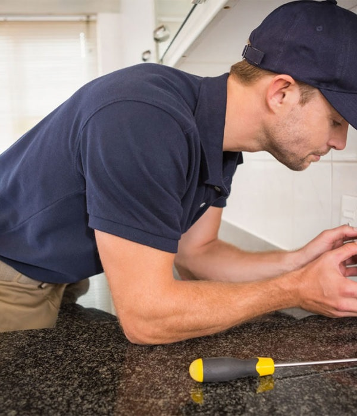
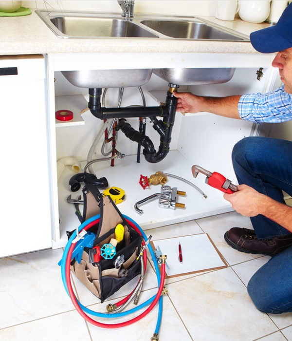

OUR SERVICES
Home Maintainance
Home improvement projects can feel like they last a lifetime. That is primarily because there are often so many minor details that need to be handled before you can genuinely cross it off your list. The finishing work of a project is the most tedious and boring part. But they also make the biggest difference in making the project look complete and professional. Handymen have all of the skills and tools they need to pull-off those little details you don't want to do. Things like caulking or cleaning grout or painting trim work. Each of those things adds up to a beautiful final product. When you get a handyman to take care of the whole project, they will be sure to add all of these minor details to give you the best result possible
Plumbing
There aren't many things that are more annoying than leaking plumbing fixtures. From the constant dripping sound to the mold and mildew that comes from the excess water, it's a big problem all around. But finding the actual leak and knowing how to fix it can be a more difficult task than you'd think. The job may be too much for you and still not quite big enough to call the actual plumber for. That's where the handyman repair company comes in. They'll send out a professional who knows what to look for and how to fix any leaks. That includes leaks under sinks, showers, toilets, washing machines, or refrigerators. The quicker you can get these leaks handled, the less lasting damage you'll have.
Furniture Making
Most people don't think following incomprehensible instructions to put together a new piece of furniture sounds like a good, relaxing after-work activity. And yet furniture assembly is one of the most forgotten handyman services available. Don't avoid buying new furniture because you don't want to take the time to put it together. A handyman service company can put together any type of furniture you need, including beds, bookshelves, desks, or tables. They can even help to assemble cabinet boxes or other more permanent fixtures in your home. Another bonus of having help assembling furniture is that the handyman will get it set up in its correct place. No more scooting furniture inch by inch into place! Remove one of the most frustrating tasks from your list and hire a handyman!